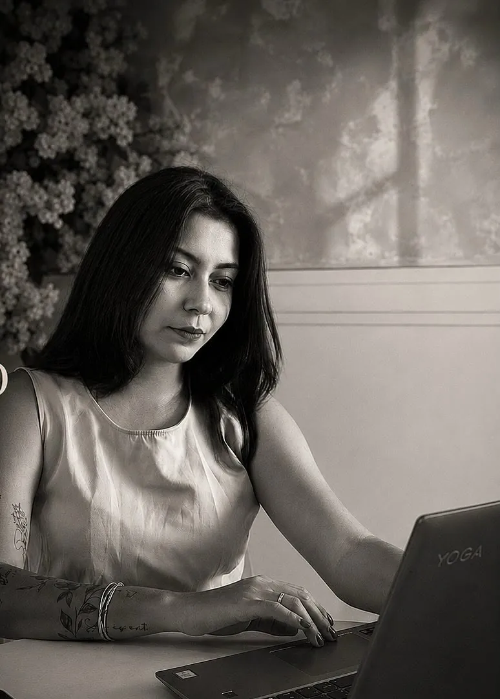

Quem conduz
“Construir uma marca vai muito além de escolher cores ou estar nas redes. É entender o que existe por trás de cada negócio.”
Eu não acredito em comunicação feita só para preencher calendário. Acredito em decisões bem pensadas, posicionamento consistente e uma estratégia que faça sentido para a realidade de cada empresa.
Foi com esse olhar que construí a ROVYA: para enxergar além das redes sociais, conectar as áreas do negócio e transformar comunicação em ferramenta de gestão e crescimento.
Sabrina Amorim